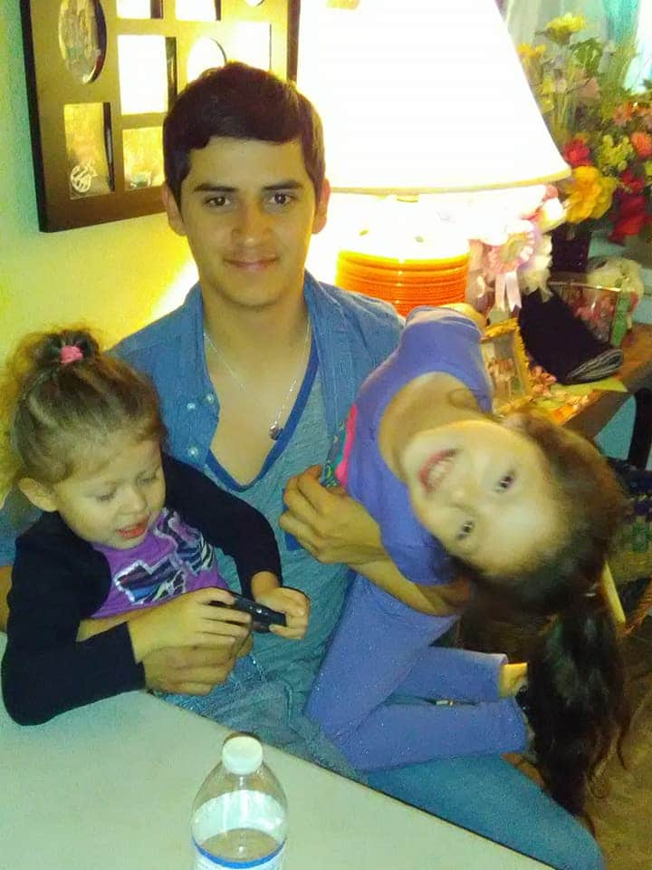
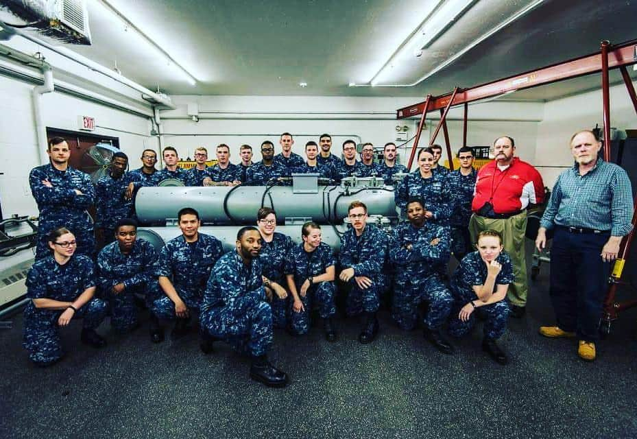
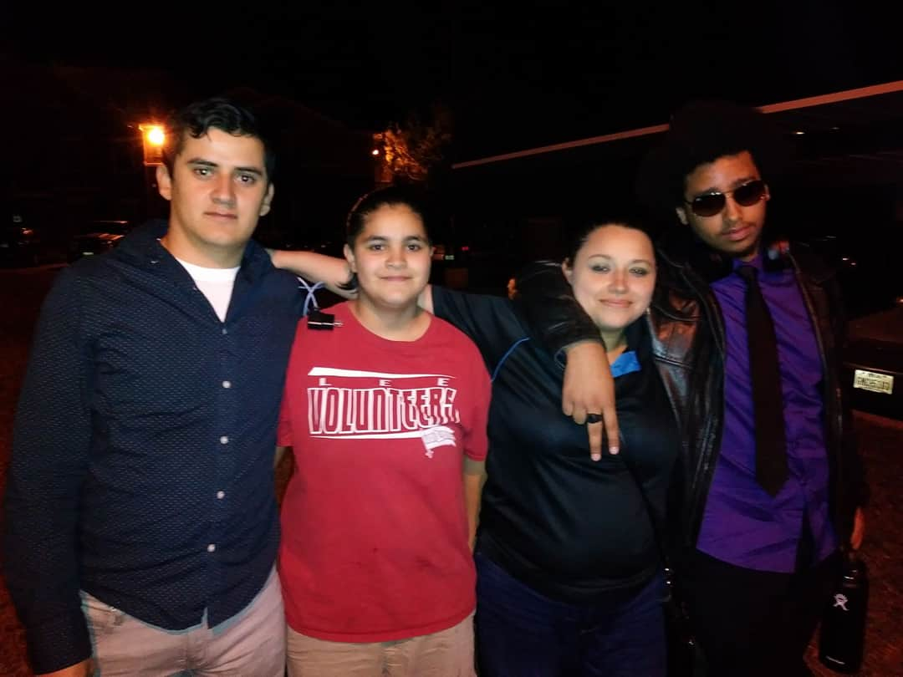
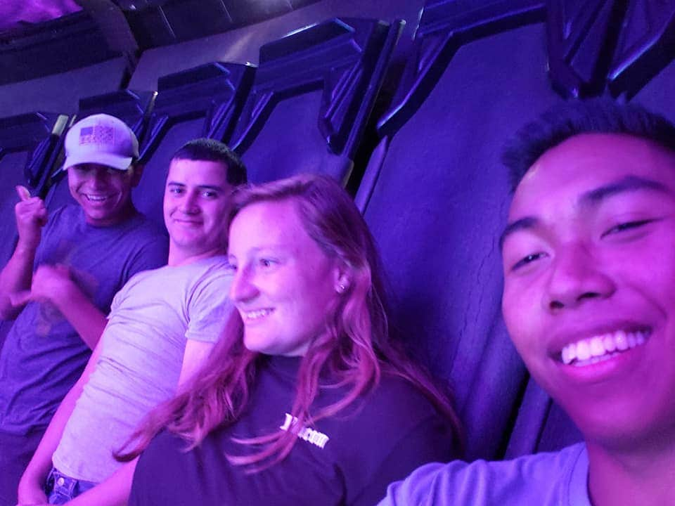
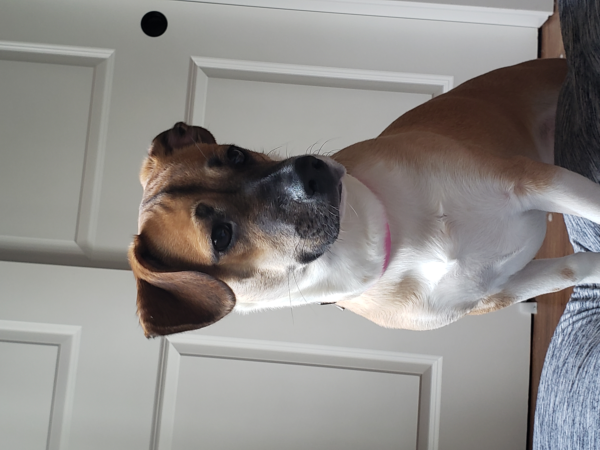

After graduating Highschool in San Antonio, TX, I spent some quality time with my family before shipping off to
bootcamp. I spent 4 great years in the Navy where I visited at about 10 different countries and met some truly
amazing friends. On the far left you can see me being silly with my neices (Lily on the left and Zoey on the
right). Then there's my A-school class not long before graduation standing around a torpedo launcher that we had
been training on for 3 months. On the center right is a picture of one of my brothers, 2 of my sisters and
myself (from right to left Seth, Valerie and Madeline). Lastly, you can see me with 3 friends I will never
forget. From left to right it's Hernandez, me, Bohler and Tandog (we were all in the Navy so lastnames were the
norm). We had a great time at a county fair in San Diego, CA where I was stationed for 4 years and deployed from
twice.

Now that I know where I want my life to take me I have left the navy. I'm so happy to have adopted Macy. She's
the first dog I've cared for on my own and she has been an absolutely amazing companion. We've had some amazing
adventures together travelling from Del Rio, TX, where my mother rescued her, to San Antonio, TX to visit with
family and friends before finally moving to Seattle to pursue my dream of creating drones to assist both
professional and amateur oceanographers in safely uncovering the mysteries of our oceans.
Web Developement is my first step toward becoming a robotics engineer and I am just thrilled to have the
opportunity to get this certification so quickly and get some real experience starting with aerial drone
interfaces and moving more into the actual drone itself. From there, I'd like to find a robotics program similar
to codefellows if possible, but a degree from a college or university would also work well.